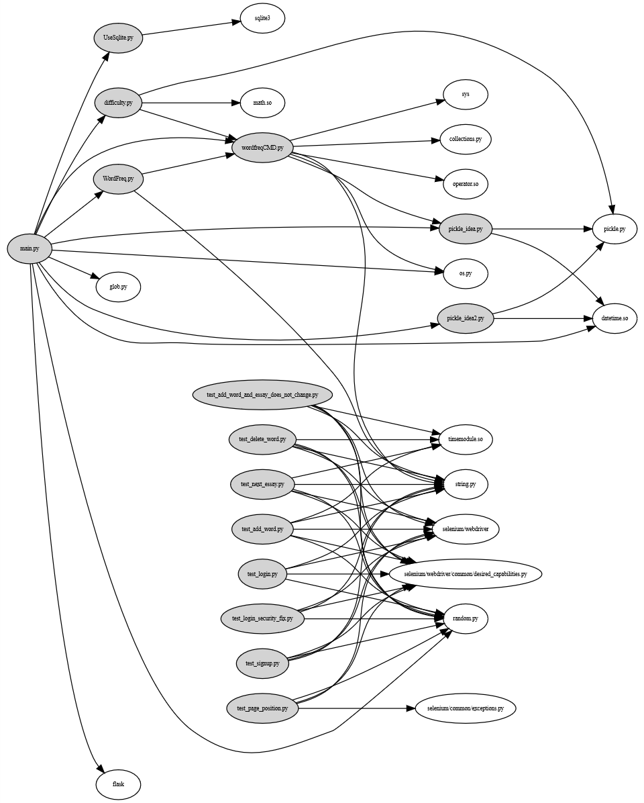
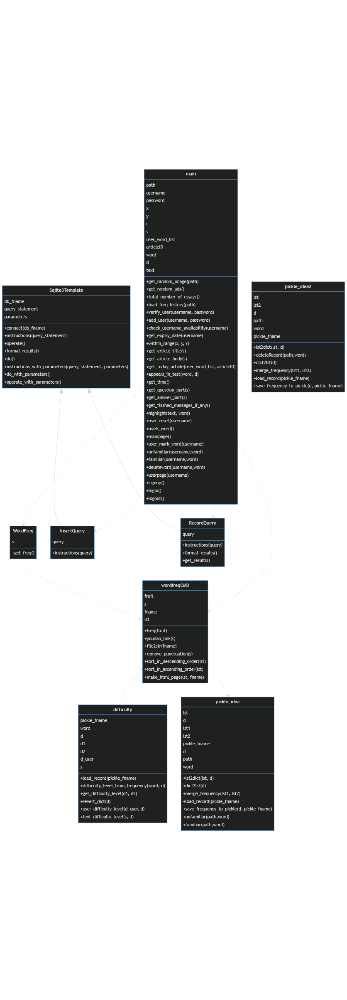
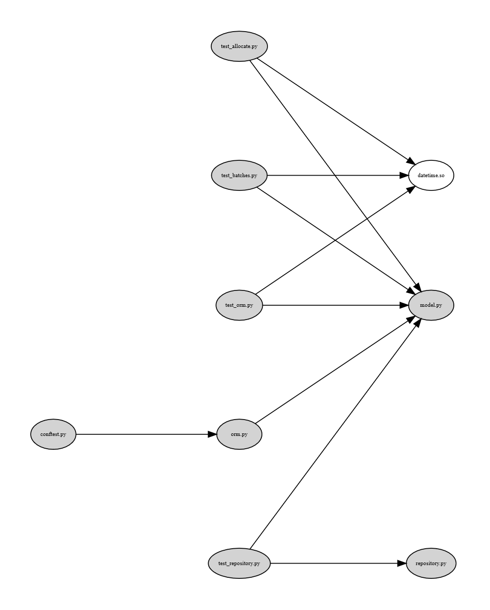
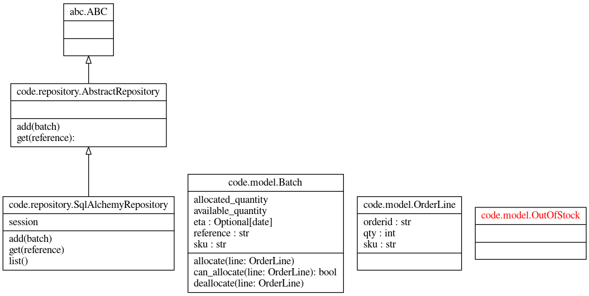

Lab 1: 分析依赖与绘制依赖图¶
小组成员
201932110136孙诚浩
201932110133沈鹏程
201932110131乔铁铮
201932110135孙超杰
摘要：¶
一个Python项目的实现要依靠大量的代码的堆砌，在代码的使用过程中，不可避免的要用到代码的复用、依赖等使用方法，然而当一个项目完成后再去从头开始分析模块间的依赖关系，然后还要把关系绘制成图，这无疑是一件令人头大的工作。因而本次实验就是为了解决这个问题，通过使用Snakefood这一个工具来分析项目中的模块依赖关系，在得到Snakefood的分析结果之后使用Graphviz Online这个工具来绘制成图，除此之外还使用Mermaid Live Editor这个工具来手工地绘制项目中的类和方法依赖图，对于手写类依赖于函数依赖这一方面，我们尝试了使用Pyreverse来简化部分操作。
介绍：¶
本次实验，要求分析EnglishPal的项目结构，EnglishPal是一个由老师和过去的学生共同完成的项目，其作用是帮助使用者学习英语，EnglishPal的完成自数年之前，整体采用flask框架，代码中存在大量已经不符合当今规范的写法，若是让人手工分析项目的模块，这无疑是一件繁琐且困难的事情，所以我们要借助工具Snakefood的帮助。Snakefood是有Martin Blais开发的一款用于从Python代码生成依赖关系图的Python库文件，通过使用Snakefood提供的方法和指令，我们可以轻松的获得项目的模块依赖关系，Snakefood会自动地生成***.dot文件，将这个dot文件复制到Graphviz Online中即可生成对应的依赖图。实验的第二步是手工地绘制EnglishPal中的方法依赖，这需要用到Mermaid Live Editor这个工具帮助我们绘图，同时在可以进行解析的部分使用Pyreverse来自动绘制类和方法之间的依赖，Pyreverse是一款可以自动解析Python项目的类依赖关系并将其绘制成图的开源工具。
除了分析EnglishPal之外还有一个任务是分析cosimicpython这个项目，分析方法与上面描述的相同。
实验方法：¶
EnglishPal原本的项目使用的是Python语言，因而我们依旧使用Python语言，这将为我们省去使用其他语言的造成的语法转换、模块转变等麻烦。EnglishPal使用的框架是flask框架，我们依然使用flask框架，要使用falsk框架需要利用pip工具来自动化安装falsk，指令为pip install falsk，安装完成后，运行EnglishPal，确保原项目可以正常工作，库的依赖关系没有出错。
接下来，同样是使用PIP工具安装Snakefood，安装完成后使用命令，在命令控制行中输入sfood app即可分析出app这个包下面所有*.py中的依赖关系，解析完成后生成***.dot文件，这个文件存储了Json格式的项目依赖关系，把这个文本复制到Graphviz Online中，Graphviz Online能帮助我们解释这个文本，并将它绘制成精美和图片。
对于模块级别的依赖我们使用Snakefood就够了，并且Snakefood尽管是已经停止更新，且过时的工具，但它仍能正常运作。但对于更细分的类依赖和方法依赖，Snakefood已经无法再进行解析，在这里我们需要使用Pyreverse这个工具来帮助我们完成类依赖解析，使用指令pyreverse -ASmy -o png app，就可以自动化分析app文件夹下的py文件之间的类依赖关系并且生成png文件，但此时我们遇到一个问题，main.py文件没法被Pyreverse解析到，多次尝试无果之后，我们使用了自动与手动结合的方法，自动解析除了main.py以外的的其他py文件之间的依赖关系，手动写出main.py与其他py文件的类依赖关系然后再使用Mermaid Live Editor这个工具帮助我们绘图。
Cosmicpython的分析和上面所做的大致相同。
结果：¶
snakefood.dot:
This file was generated by sfood-graph.
strict digraph "dependencies" {
graph [
rankdir = "LR",
overlap = "scale",
size = "8,10",
ratio = "fill",
fontsize = "16",
fontname = "Helvetica",
clusterrank = "local"
]
node [
fontsize=7
shape=ellipse
// style=filled
// shape=box
];
// node [
// fontsize=7
// style=ellipse
// ];
"UseSqlite.py" [style=filled];
"UseSqlite.py" -> "sqlite3";
"WordFreq.py" [style=filled];
"WordFreq.py" -> "wordfreqCMD.py";
"WordFreq.py" -> "string.py";
"difficulty.py" [style=filled];
"difficulty.py" -> "wordfreqCMD.py";
"difficulty.py" -> "pickle.py";
"difficulty.py" -> "math.so";
"main.py" [style=filled];
"main.py" -> "UseSqlite.py";
"main.py" -> "WordFreq.py";
"main.py" -> "difficulty.py";
"main.py" -> "pickle_idea.py";
"main.py" -> "pickle_idea2.py";
"main.py" -> "wordfreqCMD.py";
"main.py" -> "glob.py";
"main.py" -> "os.py";
"main.py" -> "random.py";
"main.py" -> "datetime.so";
"main.py" -> "flask";
"pickle_idea.py" [style=filled];
"pickle_idea.py" -> "pickle.py";
"pickle_idea.py" -> "datetime.so";
"pickle_idea2.py" [style=filled];
"pickle_idea2.py" -> "pickle.py";
"pickle_idea2.py" -> "datetime.so";
"wordfreqCMD.py" [style=filled];
"wordfreqCMD.py" -> "pickle_idea.py";
"wordfreqCMD.py" -> "sys";
"wordfreqCMD.py" -> "collections.py";
"wordfreqCMD.py" -> "os.py";
"wordfreqCMD.py" -> "string.py";
"wordfreqCMD.py" -> "operator.so";
"test_add_word.py" [style=filled];
"test_add_word.py" -> "selenium/webdriver";
"test_add_word.py" -> "selenium/webdriver/common/desired_capabilities.py";
"test_add_word.py" -> "random.py";
"test_add_word.py" -> "string.py";
"test_add_word.py" -> "timemodule.so";
"test_add_word_and_essay_does_not_change.py" [style=filled];
"test_add_word_and_essay_does_not_change.py" -> "selenium/webdriver";
"test_add_word_and_essay_does_not_change.py" -> "selenium/webdriver/common/desired_capabilities.py";
"test_add_word_and_essay_does_not_change.py" -> "random.py";
"test_add_word_and_essay_does_not_change.py" -> "string.py";
"test_add_word_and_essay_does_not_change.py" -> "timemodule.so";
"test_delete_word.py" [style=filled];
"test_delete_word.py" -> "selenium/webdriver";
"test_delete_word.py" -> "selenium/webdriver/common/desired_capabilities.py";
"test_delete_word.py" -> "random.py";
"test_delete_word.py" -> "string.py";
"test_delete_word.py" -> "timemodule.so";
"test_login.py" [style=filled];
"test_login.py" -> "selenium/webdriver";
"test_login.py" -> "selenium/webdriver/common/desired_capabilities.py";
"test_login.py" -> "random.py";
"test_login.py" -> "string.py";
"test_login_security_fix.py" [style=filled];
"test_login_security_fix.py" -> "selenium/webdriver";
"test_login_security_fix.py" -> "selenium/webdriver/common/desired_capabilities.py";
"test_login_security_fix.py" -> "random.py";
"test_login_security_fix.py" -> "string.py";
"test_next_essay.py" [style=filled];
"test_next_essay.py" -> "selenium/webdriver";
"test_next_essay.py" -> "selenium/webdriver/common/desired_capabilities.py";
"test_next_essay.py" -> "random.py";
"test_next_essay.py" -> "string.py";
"test_next_essay.py" -> "timemodule.so";
"test_page_position.py" [style=filled];
"test_page_position.py" -> "selenium/common/exceptions.py";
"test_page_position.py" -> "selenium/webdriver";
"test_page_position.py" -> "selenium/webdriver/common/desired_capabilities.py";
"test_page_position.py" -> "random.py";
"test_signup.py" [style=filled];
"test_signup.py" -> "selenium/webdriver";
"test_signup.py" -> "selenium/webdriver/common/desired_capabilities.py";
"test_signup.py" -> "random.py";
"test_signup.py" -> "string.py";
}
依赖图
mermaid.txt:
classDiagram
WordFreq ..> wordfreqCMD
wordfreqCMD <.. difficulty
wordfreqCMD..> pickle_idea
main ..> wordfreqCMD
main ..> WordFreq
Sqlite3Template <|-- InsertQuery
Sqlite3Template <|-- RecordQuery
main ..> InsertQuery
main ..> RecordQuery
class difficulty{
pickle_fname
word
d
d1
d2
d_user
s
+load_record(pickle_fname)
+difficulty_level_from_frequency(word, d)
+get_difficulty_level(d1, d2)
+revert_dict(d)
+user_difficulty_level(d_user, d)
+text_difficulty_level(s, d)
}
class pickle_idea{
lst
d
lst1
lst2
pickle_fname
d
path
word
+lst2dict(lst, d)
+dict2lst(d)
+merge_frequency(lst1, lst2)
+load_record(pickle_fname)
+save_frequency_to_pickle(d, pickle_fname)
+unfamiliar(path,word)
+familiar(path,word)
}
class pickle_idea2{
lst
lst2
d
path
word
pickle_fname
+lst2dict(lst, d)
+deleteRecord(path,word)
+dict2lst(d)
+merge_frequency(lst1, lst2)
+load_record(pickle_fname)
+save_frequency_to_pickle(d, pickle_fname)
}
class Sqlite3Template{
db_fname
query_statement
parameters
+connect(db_fname)
+instructions(query_statement)
+operate()
+format_results()
+do()
+instructions_with_parameters(query_statement, parameters)
+do_with_parameters()
+operate_with_parameters()
}
class InsertQuery{
query
+instructions(query)
}
class RecordQuery{
query
+instructions(query)
+format_results()
+get_results()
}
class WordFreq{
s
+get_freq()
}
class wordfreqCMD{
fruit
s
fname
lst
+freq(fruit)
+youdao_link(s)
+file2str(fname)
+remove_punctuation(s)
+sort_in_descending_order(lst)
+sort_in_ascending_order(lst)
+make_html_page(lst, fname)
}
class main{
path
username
password
x
y
r
s
user_word_list
articleID
word
d
text
+get_random_image(path)
+get_random_ads()
+total_number_of_essays()
+load_freq_history(path)
+verify_user(username, password)
+add_user(username, password)
+check_username_availability(username)
+get_expiry_date(username)
+within_range(x, y, r)
+get_article_title(s)
+get_article_body(s)
+get_today_article(user_word_list, articleID)
+appears_in_test(word, d)
+get_time()
+get_question_part(s)
+get_answer_part(s)
+get_flashed_messages_if_any()
+highlight(text, word)
+user_reset(username)
+mark_word()
+mainpage()
+user_mark_word(username)
+unfamiliar(username,word)
+familiar(username,word)
+deleteword(username,word)
+userpage(username)
+signup()
+login()
+logout()
}
依赖图
分析cosmicpython
cosmicpython.dot:
This file was generated by sfood-graph.
strict digraph "dependencies" {
graph [
rankdir = "LR",
overlap = "scale",
size = "8,10",
ratio = "fill",
fontsize = "16",
fontname = "Helvetica",
clusterrank = "local"
]
node [
fontsize=7
shape=ellipse
// style=filled
// shape=box
];
// node [
// fontsize=7
// style=ellipse
// ];
"conftest.py" [style=filled];
"conftest.py" -> "orm.py";
"model.py" [style=filled];
"orm.py" [style=filled];
"orm.py" -> "model.py";
"repository.py" [style=filled];
"test_allocate.py" [style=filled];
"test_allocate.py" -> "model.py";
"test_allocate.py" -> "datetime.so";
"test_batches.py" [style=filled];
"test_batches.py" -> "model.py";
"test_batches.py" -> "datetime.so";
"test_orm.py" [style=filled];
"test_orm.py" -> "model.py";
"test_orm.py" -> "datetime.so";
"test_repository.py" [style=filled];
"test_repository.py" -> "model.py";
"test_repository.py" -> "repository.py";
}
依赖图
使用Pyreverse
cosmicpython.txt:
digraph "classes" {
rankdir=BT
charset="utf-8"
"abc.ABC" [color="black", fontcolor="black", label="{abc.ABC|\l|}", shape="record", style="solid"];
"code.model.Batch" [color="black", fontcolor="black", label="{code.model.Batch|allocated_quantity\lavailable_quantity\leta : Optional[date]\lreference : str\lsku : str\l|allocate(line: OrderLine)\lcan_allocate(line: OrderLine): bool\ldeallocate(line: OrderLine)\l}", shape="record", style="solid"];
"code.model.OrderLine" [color="black", fontcolor="black", label="{code.model.OrderLine|orderid : str\lqty : int\lsku : str\l|}", shape="record", style="solid"];
"code.model.OutOfStock" [color="black", fontcolor="red", label="{code.model.OutOfStock|\l|}", shape="record", style="solid"];
"code.repository.AbstractRepository" [color="black", fontcolor="black", label="{code.repository.AbstractRepository|\l|add(batch)\lget(reference): \l}", shape="record", style="solid"];
"code.repository.SqlAlchemyRepository" [color="black", fontcolor="black", label="{code.repository.SqlAlchemyRepository|session\l|add(batch)\lget(reference)\llist()\l}", shape="record", style="solid"];
"code.repository.AbstractRepository" -> "abc.ABC" [arrowhead="empty", arrowtail="none"];
"code.repository.SqlAlchemyRepository" -> "code.repository.AbstractRepository" [arrowhead="empty", arrowtail="none"];
}
依赖图
总结：¶
使用当前架构的EnglishPal没有任何优点。在缺点方面，存在大量依赖而不对模块进行划分，使得大量的模块都存储在同一个py文件中，这种状况不利于依赖分析。
本次实验主要的目的是体验使用Snakefood、Graphviz Online、Mermaid Live Editor等工具，让我们理解一个项目的依赖情况，对一般项目中存在的依赖数量有一个大概的了解，同时让我们明白，依赖在一个项目中是必定存在的，依赖少或多并不能成为一个项目的好坏的评定标准，除此之外就是让我们体验到了上述工具的使用，可能会对我们今后的任务存在一定的帮助。综上所述，本实验中使用的工具实际使用的意义不大，在看项目的依赖关系有多少这一件事上有着出色的表现，但看项目依赖关系这件事本身并没有多大的意义。